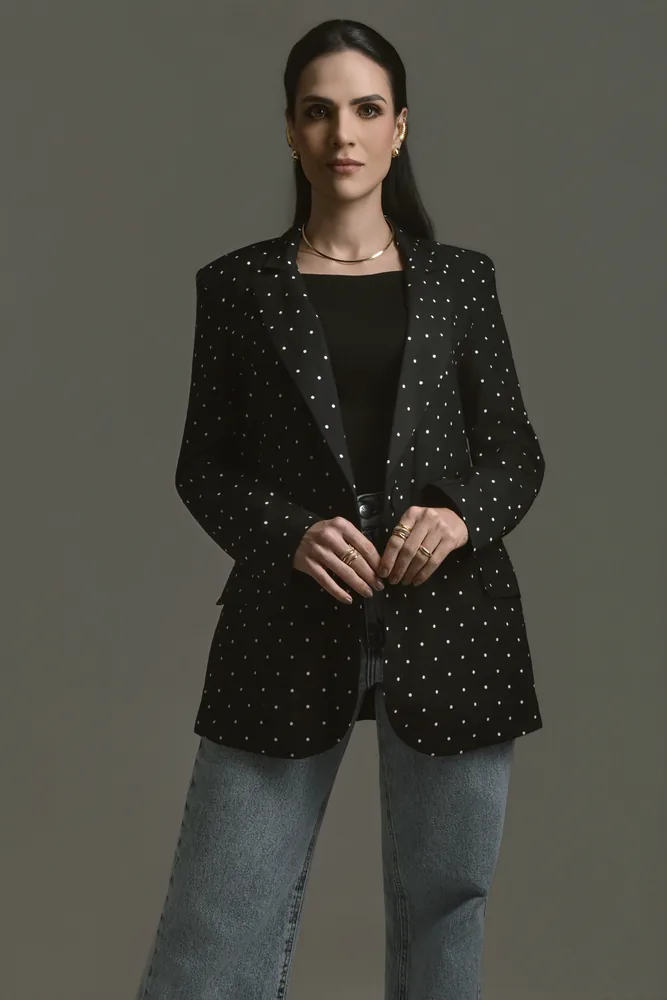

Psicóloga
Isabelle
Corine
Acolher para transformar
Psicoterapia presencial e on-line, de manhã, à tarde e à noite.
Pós-graduanda em Neurociência e Comportamento.




Um espaço de conversa, no consultório ou on-line.
Isabelle Corine é psicóloga. O atendimento acontece em Natal, no bairro de Petrópolis, e também on-line. O horário pode ser de manhã, à tarde ou à noite, combinado no primeiro contato.
A formação complementar em Neurociência e Comportamento está em curso. Ela é pós-graduanda: esta página não apresenta esse percurso como título concluído.
Registro profissional: CRP 17/2286
Presencial, on-line, e nos três períodos do dia.
- Presencial
- Encontros de psicoterapia no consultório, na Av. Hermes da Fonseca, 503, Petrópolis, Natal/RN.
- On-line
- Psicoterapia à distância, para quem prefere ou precisa do encontro remoto. O formato é combinado antes de começar.
- Horários
- A agenda cobre manhã, tarde e noite. O horário se define em conjunto, sem garantia de vaga imediata.

Estudo em andamento, ao lado da clínica.
A pós-graduação em Neurociência e Comportamento faz parte do percurso atual. Convive com a prática da psicoterapia e ainda não é uma especialidade concluída.
O que se combina no início é simples: presencial ou on-line, e o período do dia. Não há aqui uma lista de abordagens que não tenha sido publicada.

Do primeiro recado ao encontro.
-
1
Você escreve
O contato começa pelo WhatsApp. Conte, no seu tempo, o que busca.
-
2
Conversa inicial
Um primeiro contato alinha se será presencial ou on-line, e em qual período do dia.
-
3
Combinação
Horário e formato ficam acordados antes dos encontros. Nada começa sem esse alinhamento.
-
4
Encontros
A psicoterapia segue no ritmo combinado. Não há promessa de resultado, prazo ou cura.
Clínica Medicare
Av. Hermes da Fonseca, 503
Petrópolis, Natal/RN
59014-165
Consultório em Petrópolis. Atendimento também on-line, de manhã, à tarde e à noite.
- (84) 9 9602-3393
- Telefone
- (84) 8711-4502
- psi.isabellecorine@gmail.com
- @isabellecorine
- Registro
- CRP 17/2286